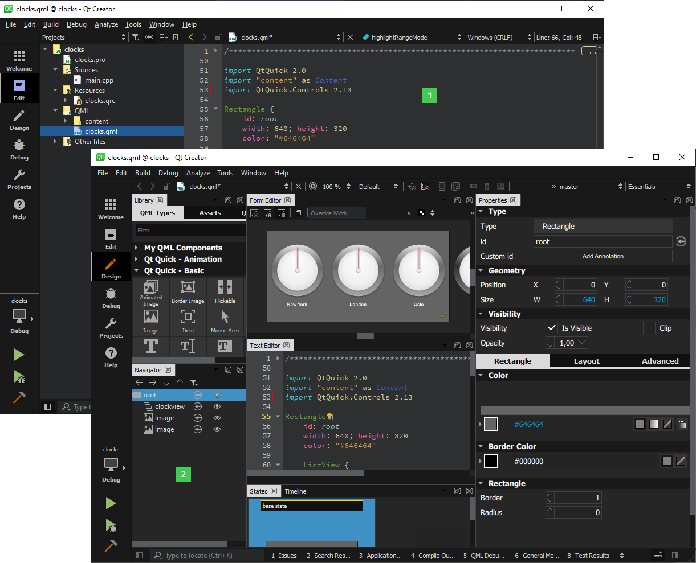

Development Tools
Qt is designed for developing applications and user interfaces once and deploying them across several desktop and mobile operating systems.
The easiest way to start application development with Qt is to download and install Qt. Qt installations contain Qt libraries, examples, documentation, and the necessary development tools, such as the Qt Creator integrated development environment (IDE). For more information, visit the Getting Started with Qt page.
Qt Creator
Qt Creator provides you with tools for accomplishing your tasks throughout the whole application development life-cycle, from creating a project to deploying the application on the target platforms. Qt Creator automates some tasks, such as creating projects, by providing wizards that guide you step-by-step through the project creation process, create the necessary files, and specify settings depending on the choices you make. Also, it speeds up some tasks, such as writing code, by offering semantic highlighting, checking code syntax, code completion, refactoring actions, and other useful features.

Design Tools
Qt Designer is a tool within Qt Creator for designing and building graphical user interfaces (GUIs) for Qt Widgets. You can compose and customize your widgets or dialogs in a visual editor, and test them using different styles and resolutions. Qt Designer is also available as a standalone tool. Both versions of Qt Designer only differ in some functionalities such as the use of resource files and how to switch in the design and edit mode. For more information, visit the Qt Designer manual.
For Qt Quick applications, you can use Qt Quick Designer which is integrated within Qt Creator. Qt Quick Designer is available in the edit mode in an open Qt Quick project. The Qt Quick Designer page has more information.
Collaboration with Designers
Qt lets designers to import assets from 2D and 3D programs, create layouts and flows, and generate code for developers. Qt Design Studio is a tool that provides rich and fluid components, a code editor, timeline-based animations, visual effects, layouts, and a live-preview for prototyping. Qt Design Studio generates code for developers to use in Qt Creator. For more information about the tools for designers, visit the Qt Design Studio manual.
Build Tools
Qt Creator creates project templates for different build systems. You can create kits for different combinations of target platforms and build environments. Qt Creator supports CMake, qmake, Qbs, Autotools, Nimble, Meson, and IncrediBuild projects.
For more information about project templates and building in Qt Creator, visit the following pages:
- Build Systems in Qt Creator
- Building for Multiple Platforms
Configuring and Building Qt
You can configure and build Qt from source using CMake or qmake. Custom configurations are for developers of Qt and for porting Qt to different targets. The Qt Platform Abstraction is an abstraction layer to facilitate Qt ports onto different platforms and targets.
For more information about building Qt, visit the following pages:
Internationalization and Help Tools
You can localize your application to different languages. There is an internationalization framework within Qt for handling different writing systems, translating interfaces, and for displaying numbers, dates, and currency in different formats. Qt Linguist is a tool for developers, translators, and release managers to implement internationalization in applications. The different roles can collaborate to produce, store, and deploy translated text in the user interface.
For more information about internationalization and localization, visit these pages:
- Internationalization with Qt
- Internationalization and Localization with Qt Quick
- Qt Linguist
- Writing Source Code for Translation
You can use the Qt Help framework to create and package help files for complex applications. The help framework involves XML-based formats and tools to create content, set the order and filters for application manuals.
- The Qt Help Framework
- Qt Help C++ module